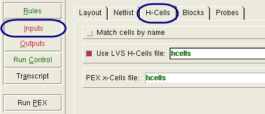
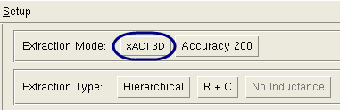
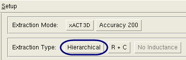

Create a netlist
from Calibre Interactive with an SVRF file setup for your type of
parasitic extraction, and specifying only the settings particular
to producing hierarchical netlists. Extraction performed from Calibre
Interactive follows the PDB extraction flow.
Prerequisites
A
valid PEX rule file for this layout. If you are creating a DSPF netlist
for use in a hierarchical simulator that accepts a position file,
add PEX Netlist Position File.
Hcell
file or Hcell statement
that includes all cells also listed in the xcell file.
Xcell
file listing cells to preserve in the parasitic netlist.
Layout
database that is LVS-clean.
For
more information refer to “Prerequisites for Performing Parasitic Extraction”.
Procedure
- Start the PEX interface in
Calibre Interactive.
- Load a runset or rule file.
- Specify
the hcells and xcells by clicking the Inputs button
in the left pane. Select the H-Cells tab. Specify the hcell and
xcell files in the appropriate fields. (They can be the same file.)
Figure 1. Inputs Pane for Hierarchical
Extraction 
- Specify the Extraction Type
by clicking the Outputs button
in the left pane.
- Set Extraction Mode to xACT 3D.
Figure 2. Set Extraction Mode
- In the area above the tabs,
set Extraction Type to Hierarchical.
Figure 3. Hierarchical Extraction
Type Setting.
- Set other controls as needed.
- Click the Run PEX button in the left pane.
Results
Check the Transcripts pane to verify
the run completed with no errors. If you have selected “View netlist
after PEX finishes” in the Outputs pane, a text viewer appears with
the generated netlist loaded.